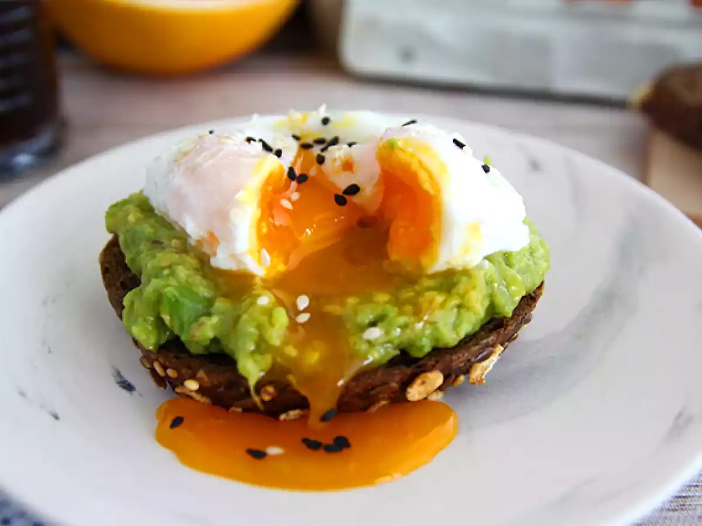
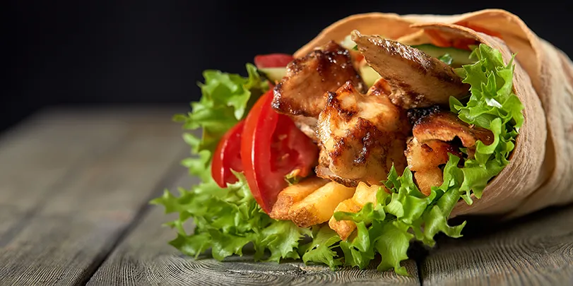
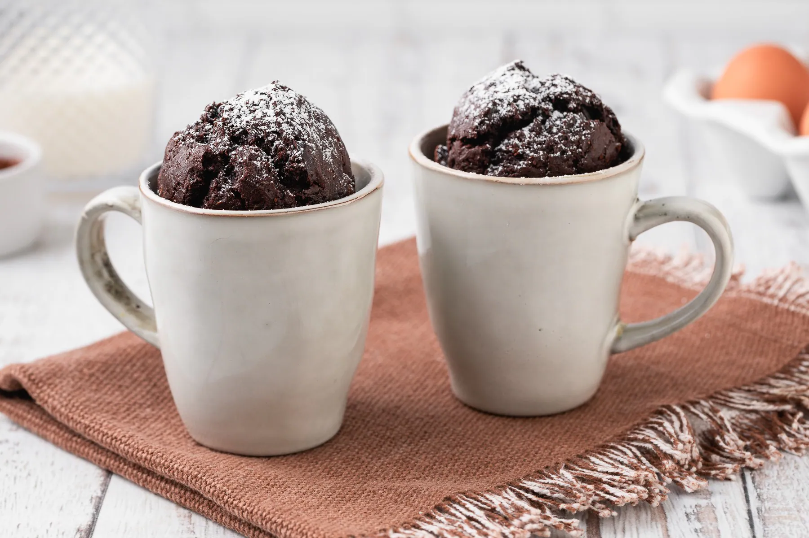

Avocado toast con uovo in camicia
Ingredienti:
- 2 fette di pane
- 1 avocado maturo
- 2 uova
- succo di limone
- sale, pepe
- semi (sesamo o chia, facoltativi)
Procedimento:
- Schiaccia l’avocado con limone, sale e pepe.
- Tosta il pane.
- Prepara l’uovo in camicia (3 min in acqua bollente con un filo di aceto).
- Spalma l’avocado sul pane e aggiungi l’uovo sopra.
- Completa con semi o spezie.

Pasta cremosa ricotta e spinaci
Ingredienti:
- 200 g di pasta
- 150 g di ricotta
- 100 g di spinaci freschi o surgelati
- parmigiano grattugiato
- sale, pepe
Procedimento:
- Cuoci la pasta.
- Salta gli spinaci in padella finché appassiscono.
- Aggiungi ricotta e un po’ di acqua di cottura della pasta.
- Unisci la pasta e mescola fino a ottenere una crema.
- Aggiungi parmigiano e servi.

Wrap di pollo e yogurt
Ingredienti:
- 2 piadine o tortillas
- 1 petto di pollo
- 2 cucchiai di yogurt bianco
- insalata
- paprika o curry
- sale, olio
Procedimento:
- Cuoci il pollo a pezzetti con olio e spezie.
- Mescola yogurt con un pizzico di sale.
- Scalda le piadine.
- Farcisci con pollo, insalata e salsa yogurt.
- Arrotola e servi.

Mug cake al cioccolato
Ingredienti:
- 4 cucchiai di farina
- 2 cucchiai di zucchero
- 2 cucchiai di cacao
- 3 cucchiai di latte
- 2 cucchiai di olio
- 1 pizzico di lievito
Procedimento:
- Mescola tutto direttamente in una tazza.
- Cuoci in microonde per circa 1 minuto e mezzo.
- Lascia intiepidire e gusta.
